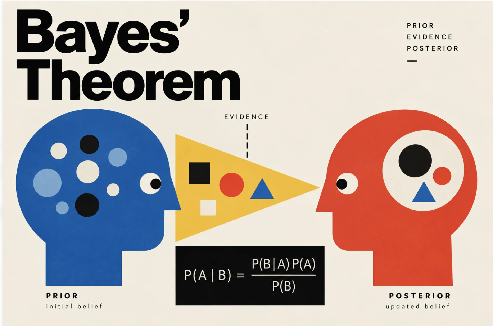
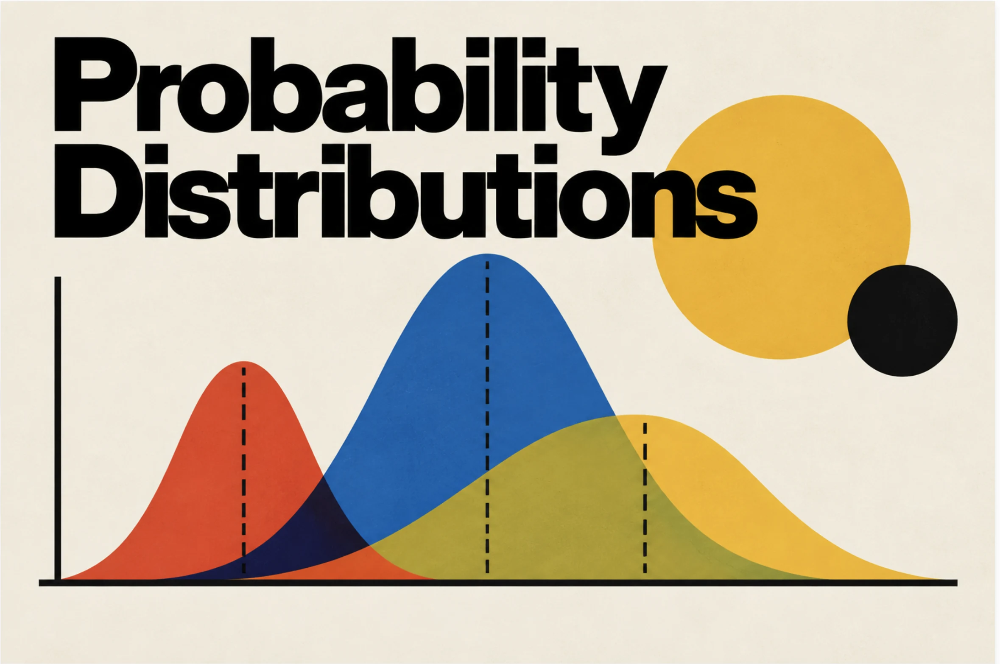
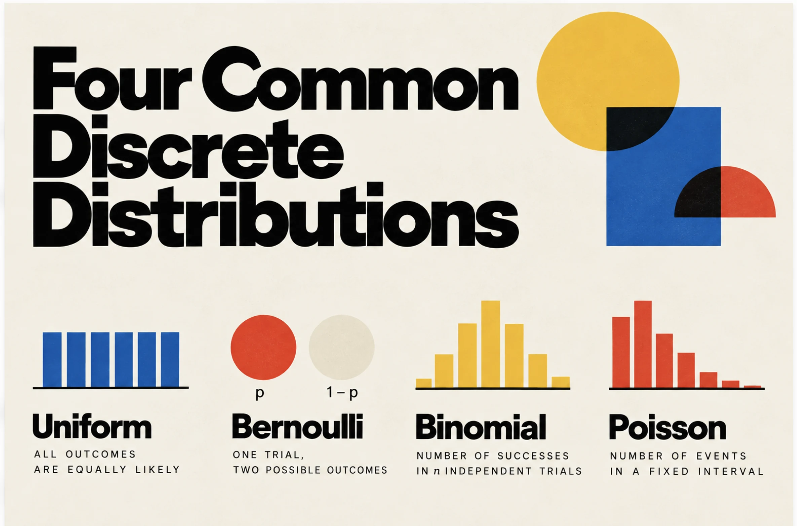
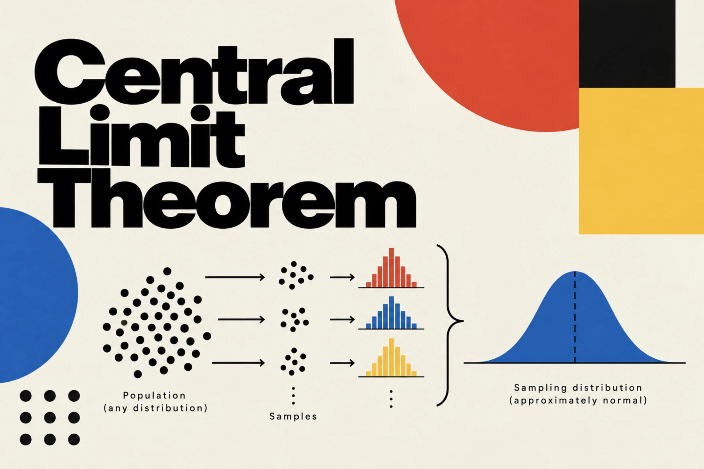

Knowledge
Statistics is fantastic
How to read data — and make it less boring.
Describing data
Summarise a dataset: center, spread, outliers and first exploration.
 Descriptive statistics
Descriptive statistics
Descriptive statistics
Descriptive statistics
How to read the story hidden in data: center, spread and position.
 Descriptive statistics
IQR
Descriptive statistics
IQR
The middle 50% of your data: spread, outliers and box plots.
 Exploratory analysis · Retail
Exploratory Data Analysis
Exploratory analysis · Retail
Exploratory Data Analysis
Systematic exploration of NordHome's retail data — distributions, group comparisons, relationships and outliers.
Probability
From single events to distributions: the language of uncertainty.
 Probability
Probability Basics
Probability
Probability Basics
How likely is an event? Outcomes, events, and the complement, addition and multiplication rules.
 Probability
Conditional Probability & Independence
Probability
Conditional Probability & Independence
When does one event change the probability of another? Dependent events and P(B | A).

Probability Bayes’ TheoremHow to update a belief with new evidence: prior, likelihood, posterior, and why an alert can still be wrong.

Probability Random Variables & Probability DistributionsFrom a random variable to PMF, PDF and CDF: how to describe uncertainty in discrete and continuous data.

Probability Four Common Discrete DistributionsUniform, Bernoulli, binomial and Poisson: what each one models and when to use it.
 Probability
Normal Distribution
Probability
Normal Distribution
The bell curve and the 68-95-99.7 rule: what is typical, what is rare, and how to spot outliers.
 Probability
Common Continuous Distributions
Probability
Common Continuous Distributions
Uniform, normal, exponential and log-normal: what each one models and when to use it.
Sampling
How to choose the data you analyze, and how to avoid bias.
 Sampling
Sampling Methods
Sampling
Sampling Methods
Probability and non-probability sampling: how each method works and how it can bias your data.

Sampling Central Limit TheoremSampling distributions, standard error, and why the means of repeated samples form a bell curve.
Inference & experiments
Test whether a change really made a difference.